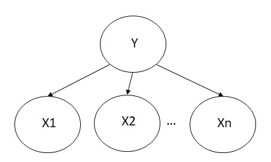

Questions
- why to say the conditional independence is weaker than independence?
- what are the properties of conditional independence? How to compare them with independence?
- what is the definition of bayesian network?
- what is the relation between conditional independence and bayesian network?
- what are the advantages of bayesian network?
Keywords
conditional independence, naive bayes models, bayesian networks
Conditional independence
Using independence in formula will greatly decrease the number of parameters from $O(2^n)$ to some smaller numbers, even $O(n)$
Definition
$A$ and $B$, two random variables, are conditional independence given $C$ iff for all $a,b,c$
$$
\text{Pr}(A=a\cap B=b|C=c) = \text{Pr}(A=a|C=c)\text{Pr}(B=b|C=c)$
$$
- $\Pr[Y=y|Z=z]>0, \Pr[X=x|Y=y,Z=z]=\Pr[X=x|Z=z]$
It is denoted as$(X\perp Y) | Z$
Properties
Claim: all of the following properties should have non-conditional version
symmetry: $(X\perp Y)|Z \Leftrightarrow (Y\perp X)|Z$
- The proof is trivial
decomposition: Given Z, X is conditional independent from Y and W. We can conclude that X is conditional independent from Y and X is conditional independent from W specifically.
$$
(X\perp (Y,W))|Z \Leftrightarrow (X\perp Y)|Z \wedge (X\perp W)|Z
$$Proof left to right: Since Y and W are symmetric, I only prove for $Y$ in discrete version. The continuous version is similar
$$
(X\perp (Y,W))|Z\Leftrightarrow P((XYW)|Z)=P((X(YW))|Z)
$$$$
= P(X|Z)P((YW)|Z)
$$$$
\Rightarrow P((XY)|Z) = \sum_W P((XYW)|Z) = \sum_W P(X|Z)P((YW)|Z)
$$$$
= P(X|Z)\sum_W P((YW)|Z) = P(X|Z)P(Y|Z)
$$$$
\Rightarrow (X\perp Y)|Z
$$Proof right to left: I don’t know how to prove it. ?????maybe it is not true??
Contraction: $((X\perp Y)|Z)\wedge (X\perp W|(YZ))\Rightarrow (X\perp (WY))|Z$
weak union: $(X\perp (YW))|Z\Rightarrow (X\perp Y)|(ZW)$
intersection:$(X\perp Y)|(WZ)\wedge (X\perp W)|(YZ)\Rightarrow (X\perp(YW))|Z$
Application
Example: In a naive bayes model, where: $Y$ is the cause variable, $X_1,\cdots,X_n$ are the effects variables. 
We can give a conditional independence assertion:
$$
X_A\perp X_{\bar{A}}|Y,\forall A\subset{1,2,\cdots,n}
$$
Where$ A={i_1,\cdots,i_k}\subset{1,2,\cdots,n}$ and $\bar{A}={1,2,\cdots,n}$ $A, X_A={X_{i_1},\cdots,X_{i_k}}$
In general, conditional independence can be used to transfer joint parameterization into conditional parameterization. In this way, we can greatly reduce the number of parameters. Formally,
$$
\Pr[X_{1:n}]=\prod_{i=1}^n\Pr[X_i|parents(X_i)]
$$
The number of parameters change: $\prod_{i=1}^n |X_i|\to \sum_{i=1}^n |X_i|^{\prod_{X_j\in parents(X_i)}|X_j|}$
Bayesian Network
- Bayesian: uses the Bayes’ theorem, which specifies an event’s probability given some conditions.
- network: represented by directed graph, as a network.
Definition
A Bayesian Network is a directed acyclic graph in which:
- node:
- each node corresponds to a random variable
- numeric parameters: each node has a conditional probability distribution $P(x|\text{parents}(x))$
- links:
- a link from node $X$ to node $Y, X$ is said to be a parent of $Y$.
- intuitive meaning: $X$ is a parent of $Y\to X$ has a direct impact on $Y$. Causes should be parents of effects.
- No directed cycles. It is a DAG
Semantics
Two ways to understand the semantics of Bayesian Network:
- as a representation of the joint probability distribution
- as an encoding of a collection of conditional independence statements.
Structures
$$
X\perp Z|Y,\neg X\perp Z
$$
- $x\leftarrow y\to z$: common cause
- $x\leftarrow y\leftarrow z$: indirect evidential effect
- $x\to y\to z$: indirect causal effect
$$
\neg X\perp Z|Y, X\perp Z
$$
- $x\to y \leftarrow z$: common effect
Usage
Build algorithm
Nodes:
- determine the set of variables that are required to model the domain.
- Order them ${X_1,\cdots,X_n}$. Any order will work. But the resulting network will be more compact if the variables are ordered such that causes precede effects.
Links: For each $X_i$ do:
- find the minimal parent subset A from ${1,2,\cdots,i-1}$, s.t. $P(X_i|{1,2,\cdots,i-1})=P(X_i|A)$
- in some way, minimal means direct influence. For example, some variable in ${1,2,\cdots,i-1}$ may have indirect influence on $X_i$, through a variable $X_k$. Then, if we include $X_k$, they are excluded.
- for each parent $X_k$ in A, insert a link from $X_k$ to $X_i$
- write down the conditional probability table.
- find the minimal parent subset A from ${1,2,\cdots,i-1}$, s.t. $P(X_i|{1,2,\cdots,i-1})=P(X_i|A)$
Identification of conditional independence
Not independent/dependent can transmit conditions. That means if we know some condition, all variables not independent of it are known or partially known.
Given a Bayesian network, how to find the independence relationship between variables from the network structures?
An important theorem says:
$$
\text{d-sep}(X;Y|Z)\Rightarrow (X\perp Y)|Z
$$
converse does not hold in general, but for “almost” all distributions.
d-separation
This term describes a structural relation between variables in a given network. We can connect this structural relation with independence relation.
Given observed variables $O$, any variables Xi and Xj for which there is no active trail are called d-separated by $O$. Written as $\text{d-sep}(X_i;X_j|O) $
active trail: an undirected path in BN structure G is called active trail for observed variables $O\subset{X_1,X_2,\cdots,X_n}$, if for every consecutive triple of vars $X,Y,Z$ on the path
- $X\to Y\to Z,Y\notin O$
- $ X\gets Y\gets Z,Y\notin O$
- $ X\gets Y\to Z,Y\notin O$
- $X\to Y\gets Z$, and $Y$ or any of $Y$’s descendants is observed.
linear time algorithm for d-separation: find all nodes active trail reachable from $X$
mark $Z$ and its ancestors
do breath-first search starting from $X$; stop if path is blocked